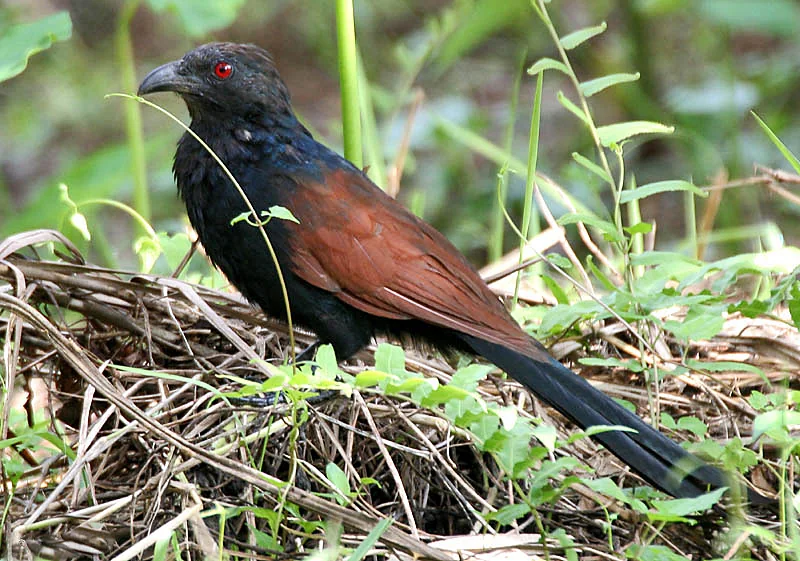

Back to the indexNO. 051 · Songbirds & City Birds / Cuculidae · Cuckoos
Greater Coucal
褐翅鸦鹃 · hè chì yā juān Centropus sinensisBlack body, red wings, red eyes — the 'feather chicken'
Glossy blue-black all over, but with a pair of deep chestnut wings and eyes like two rubies. Older Cantonese speakers call it 'mou gai', the feather chicken; it was once hunted heavily and is now a nationally protected species (Class II). It is one of the most secretive large birds of the southern scrub.
Gallery
One scientific illustration for shape and colour blocks, two field photographs for how it looks in real light. Click any image to enlarge.
Identification
- ColourHead, neck, breast, belly and tail black with a violet-blue gloss; the wings deep chestnut — an extraordinarily strong contrast.
- EyeIris brilliant red, startling against the black head.
- Bill & clawsBill black, heavy and slightly downcurved; feet strong, with the fourth toe reversible (zygodactyl), made for clambering in thickets.
- TailLong and broad, black with a green gloss, usually trailing behind and fanned in flight.
Behaviour
Extremely secretive, usually flying low or clambering through scrub, reedbeds and tall grass, rarely making a long flight; it glides with the wings drooped. It takes insects, lizards, frogs, mice and the eggs and nestlings of other birds. Unlike the Asian Koel it builds its own nest — a domed ball — and is no brood parasite. On fine mornings it often suns itself in the open with its wings spread. Habitat loss and a long history of hunting have brought numbers down markedly.
Voice
A series of low 'boop—boop—boop—boop' notes, hollow as if blown across the mouth of a jar, evenly paced, sometimes in duet. The most reliable evidence that the bird is present.
Where to find it in Zhuhai
- Qi'ao Island reeds and scrub
- Mangzhou Wetland fringe
- Doumen grassy slopes
- southern foot of Banzhang Hill